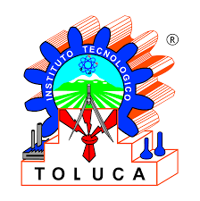

IT Toluca
Tecnológico Nacional de México
Subdirección Académica
MovilidadEstudiantil
Conoce los programas que el IT Toluca ofrece para que sus estudiantes amplíen su formación en otras instituciones de México.

IT Toluca
Tecnológico Nacional de México
Conoce los programas que el IT Toluca ofrece para que sus estudiantes amplíen su formación en otras instituciones de México.
Para el Fortalecimiento de la Investigación y el Posgrado del Pacífico
El Programa Delfín busca contribuir a la creación de una cultura científico-tecnológica por medio de actividades de divulgación, investigación y posgrado en las Instituciones de Educación Superior del Pacífico.
Consiste enDifusión accesible y continua del conocimiento generado por la investigación científica de la región del Pacífico.
Acciones que motivan a los estudiantes destacados de licenciatura a fortalecer su desarrollo académico.
Desplazamiento del personal académico para divulgación científica y promoción del posgrado e investigación.
Apertura de convocatoria
FEBRERO
Amplía tu formación cursando en otras instituciones de México
El tránsito que realizan los estudiantes del IT Toluca para ir a cursar asignaturas en otra Institución de Educación Superior, dentro o fuera del TecNM, fortaleciendo su formación integral y desarrollando una visión globalizadora.
CaracterísticasHasta 3 semestres alternados o consecutivos
Sin perder el estatus legal en el IT Toluca
Las asignaturas cursadas son acreditadas oficialmente en tu expediente
Puedes estudiar dentro o fuera del Tecnológico Nacional de México
Apertura de convocatoria
MAYO Y OCTUBRE
Edificio de Ingeniería en Logística B-4, planta baja. El coordinador te orienta personalmente.
DELFÍN si te interesa la investigación, o Movilidad Nacional si quieres cursar en otra institución.
Consulta con la oficina la documentación y criterios de selección necesarios para aplicar.
Reúne tu documentación y entrégala dentro del periodo de convocatoria correspondiente.
La oficina te acompaña durante todo el proceso de tu estancia académica.
Coordinador
Mauro Sánchez Sánchez
Correo electrónico
subacad.movilidad@toluca.tecnm.mx
Teléfono
(722) 2087200 Ext. 3010
Ubicación
Edificio de Ingeniería en Logística B-4, planta baja